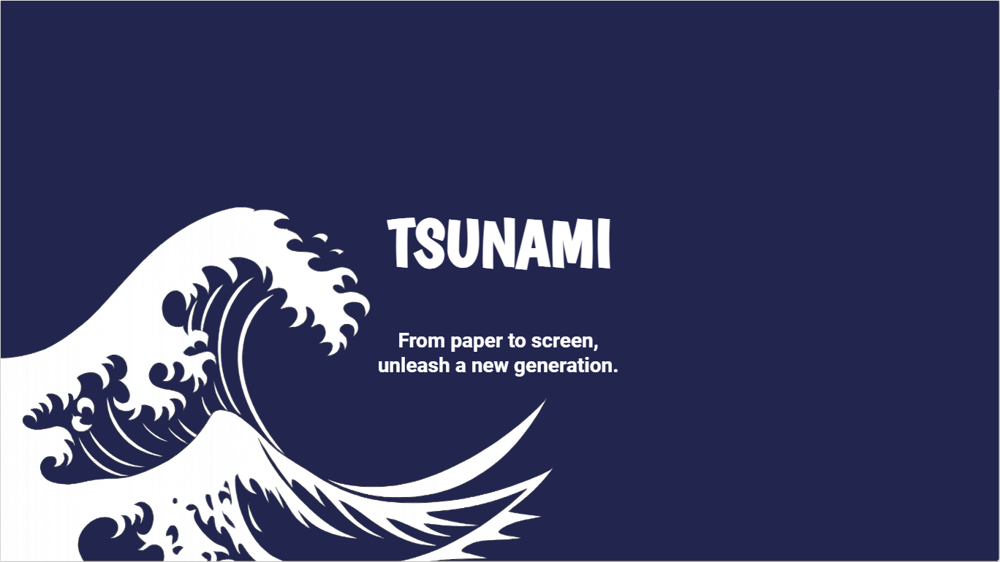

BigQuery
dbt
Looker Studio
Python · ML
Tsunami — quel manga adapter en animé ?
- Question métier
- Identifier les mangas qui ont le plus de chances de réussir une adaptation en animé.
- Démarche
- Collecte et modélisation des données dans BigQuery avec dbt, dashboard Looker Studio, modèle de machine learning en Python.